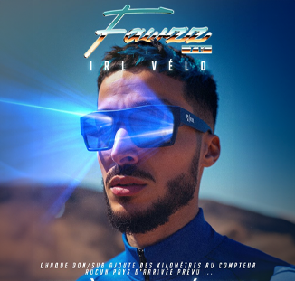

Fawzz TV
Dans le cadre de la création d'un événement spécial pour le streamer Twitch 'Fawzz', j'ai élaboré un concept, défini une direction artistique et réalisé l'ensemble. J'ai également adapté la communication aux différents réseaux sociaux.
Compétences utilisées
- Retouche photo : Photoshop
- IA générative : entraînement d'un modèle, affinement d'un prompt, génération
